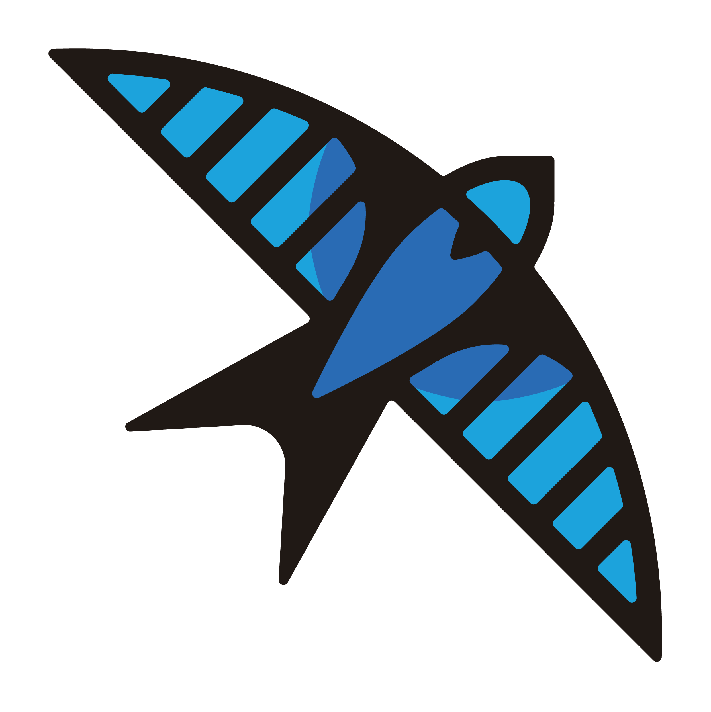
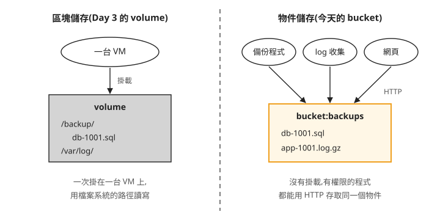
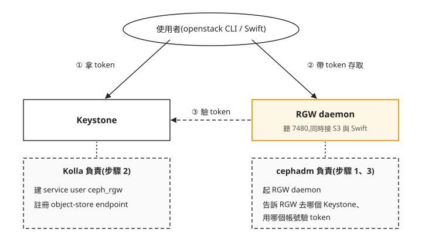
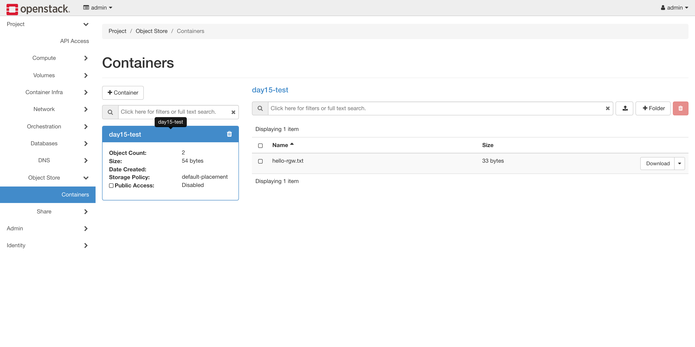
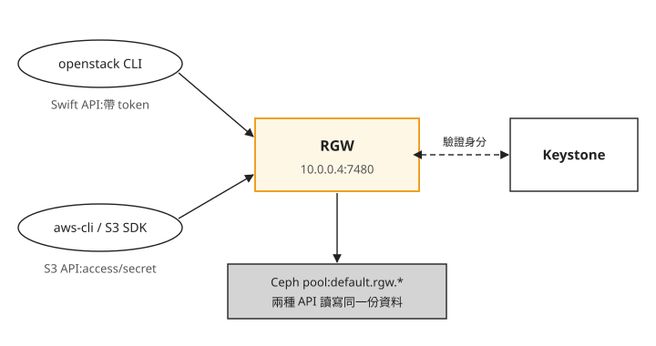

Day 15: 用 Ceph RGW 開物件儲存——S3 與 Swift API、Keystone 認證¶

假設有個團隊要把每天的資料庫備份和壓縮過的 log 存到你的雲上。他們的程式原本使用 S3 SDK,希望沿用 HTTP API 存取備份,因此需要確認新的儲存服務是否支援程式用到的操作。Day 3 的 Cinder volume 幫不上忙:volume 一次只掛在一台 VM 上,那台 VM 關機時,其他程式就拿不到裡面的檔案。他們要的是任何程式都能透過 HTTP 存取的儲存,這就是物件儲存。
Day 14 在主機上立好了一套 Ceph,這一章在它上面開出物件儲存服務 RGW,並接上 OpenStack 的帳號系統 Keystone:做完之後,你的雲會多一個 object-store endpoint,主線會以 OpenStack 帳號驗證 Swift API 存取。S3 金鑰與工具設定另放在未驗證的選讀段落,不列入這次完成結果。讀完之後,物件儲存的請求失敗時,你能分辨問題是 RGW 本身沒起來、Keystone 裡的 endpoint 沒註冊對,還是 RGW 沒辦法向 Keystone 驗證身分,並知道該回哪一步檢查。
區塊儲存和物件儲存差在哪¶
先把 Day 3 的 volume 和今天要開的物件儲存放在一起比:

我們可以從圖上看到兩個差別:
- 左邊要先掛載,右邊不用。 volume 是一顆磁碟,要掛到某台 VM 上、格式化成檔案系統才能用,而且通常同一時間只掛在一台上。物件儲存不掛載,程式直接對它發 HTTP 請求:上傳是 PUT,下載是 GET。
- 右邊沒有目錄樹。 物件儲存只有兩層:一個個容器(Swift 叫 container,S3 叫 bucket,指的是同一種東西),和容器裡的物件(一個檔案加上它的名稱與屬性)。物件名稱裡可以有斜線,但那只是名字的一部分,不是真的資料夾。
所以物件儲存適合放「寫一次、讀很多次、不需要檔案系統功能」的資料:備份、log 封存、VM 映像檔、網站的圖片。
對物件儲存發 HTTP 請求,要照一套約定好的格式,這就是 API。業界有兩套:S3 API 是 AWS S3 定的格式,大部分工具和 SDK 都支援,幾乎是事實上的標準;Swift API 是 OpenStack 自家物件儲存服務 Swift 定的格式,openstack container、openstack object 這些指令和 Horizon 的物件儲存頁面用的就是它。
今天要開的 RGW(RADOS Gateway)是 Ceph 的物件儲存服務:一個 daemon,同時聽得懂 S3 和 Swift 兩種 API,資料存在 Day 14 那套 Ceph 的 pool 裡。Day 12 講過,Kolla-Ansible 已經移除了 Swift 本身的部署支援,這門課改用 RGW 提供 Swift API,同時多得到 S3 API。
RGW 和 OpenStack 怎麼接在一起¶
Day 14 講過,主機上是兩套系統並存:cephadm 管 Ceph,Kolla 管 OpenStack。RGW 是 Ceph 的 daemon,所以由 cephadm 部署。Kolla 有一個叫 ceph-rgw 的角色,名字看起來像要部署 RGW,其實它不啟動任何容器,只做 OpenStack 那一側的整合:在 Keystone 註冊物件儲存服務,以及在有 haproxy 的部署裡替 RGW 做負載平衡。
這一側要註冊的東西有兩個:
object-storeendpoint:Keystone 裡有一份服務目錄,記著每個服務的 API 位址。openstack object create這類指令會先查這份目錄,找到物件儲存的位址才知道要把請求送去哪裡。- service user
ceph_rgw:一個專門給 RGW 用的 Keystone 帳號。使用者拿著 token 來存取時,RGW 要用這個帳號登入 Keystone,才能問「這個 token 是誰的、有沒有效」。
先看稍後會實際驗證的 Swift API 請求,以及兩邊的分工:

照著圖上的編號看:① 和 ② 是使用者自己的動作,③ 是 RGW 在背後做的事。三步都要通,一次存取才會成功。今天的設定也因此分成兩半,在 Keystone 會合:步驟 1 用 cephadm 起 RGW,步驟 2 用 Kolla 在 Keystone 註冊 endpoint 和 service user,步驟 3 再回到 cephadm,告訴 RGW 去哪個 Keystone、用哪個帳號驗 token。之後存取失敗時,也照這三段分頭查。
開始之前¶
這一章需要 Day 14 的 Ceph 叢集是 HEALTH_OK,以及 Day 1–3 部好的 Kolla OpenStack。./cephadm 指令要在 Day 14 下載 cephadm 的那個目錄(家目錄)執行;kolla-ansible 指令要先進 venv。
以下指令裡的 10.0.0.4 是主機的私有 IP,請換成你自己的(ip -4 addr show eth0 可查),每一處都要換,包括 globals.yml 和 Keystone 位址。
步驟 1:用 cephadm 起 RGW¶
用 cephadm 部署一個名叫 kolla 的 RGW 服務,放一個 daemon,聽 7480 port:
--port=7480 不能省。 RGW 沒有指定 port 時會聽 80,而這台主機的 80 已經被 Horizon 佔用(Kolla 的容器都共用主機的網路,Day 1 講過),兩邊會搶同一個 port。
約 30 秒後,sudo ./cephadm shell -- ceph orch ps 應該看到一個 rgw daemon 是 running。接著直接對它發一個 HTTP 請求,確認它在回應:
這是 S3 API 的回應格式。curl 沒帶任何身分,RGW 就當成匿名請求,回一份「你的 bucket 清單」,而匿名使用者沒有 bucket,所以 <Buckets> 是空的。看到這份 XML,代表 RGW 活著,也在 7480 上用 S3 API 回應。這時它還不認得 OpenStack 的任何帳號,接下來兩步就是要補上這一塊。
步驟 2:用 Kolla 在 Keystone 註冊物件儲存¶
把下面六行附加到 globals.yml:
sudo tee -a /etc/kolla/globals.yml << 'EOF'
enable_ceph_rgw: "yes"
enable_ceph_rgw_loadbalancer: "no"
ceph_rgw_port: "7480"
ceph_rgw_internal_fqdn: "10.0.0.4"
ceph_rgw_external_fqdn: "10.0.0.4"
update_keystone_service_user_passwords: "no"
EOF
附加之前如果想先確認 globals.yml 裡有沒有寫過這些設定,grep 要錨定行首,寫成 grep "^enable_ceph_rgw"。globals.yml 範本裡本來就有一行註解掉的 #enable_ceph_rgw: "no",沒錨定行首的 grep "enable_ceph_rgw" 會比對到這行註解,誤以為已經設定過。
一行行看:
enable_ceph_rgw: "yes":啟用 Kolla 的 RGW 整合,也就是上一節說的在 Keystone 註冊 service user 和 endpoint。enable_ceph_rgw_loadbalancer: "no":Kolla 預設會在 haproxy 上替 RGW 開一個入口。Day 1 的單機部署關掉了 haproxy,這行不寫,部署前的檢查會直接失敗。ceph_rgw_port: "7480"和兩個fqdn:決定 endpoint 寫進 Keystone 的位址。Kolla 預設的 endpoint 指向 haproxy 上的 RGW 入口(port 預設是 6780),haproxy 關了,那個位址沒有程式在聽,所以要明確寫成步驟 1 的 RGW 所在的主機和 port。internal和external分別對應 Keystone 目錄裡的 internal 和 public endpoint。update_keystone_service_user_passwords: "no":Kolla 官方文件的警告。不設的話,之後每次 reconfigure 都會重設ceph_rgw這類服務帳號的密碼,這個更新動作會使既有 token 失效,可能中斷物件儲存的存取。若另外更換了密碼檔裡的值,也要同步更新 RGW 使用的密碼。
另外在 globals.yml 明確保留以下設定。cephadm RGW 使用 /swift/v1 路徑；false 讓 Kolla 註冊的 endpoint 與 Skyline 轉送路徑維持一致。後續更新 Skyline 時也會讀到這個值。
只部署 RGW 相關的部分:
failed=0 代表 Keystone 裡已經有 ceph_rgw 這個 service user 和 object-store endpoint。步驟 4 會用 openstack endpoint list 確認位址。
步驟 3:告訴 RGW 怎麼向 Keystone 驗 token¶
最後一段回到 Ceph。RGW 要知道 Keystone 在哪,以及用哪個帳號、哪組密碼登入。密碼要和 Kolla 剛才在 Keystone 建帳號時用的那組一致,所以直接從 Kolla 的密碼檔讀出來,再一次寫進 RGW 的設定,最後重啟 RGW 讓設定生效:
PW=$(sudo grep '^ceph_rgw_keystone_password:' /etc/kolla/passwords.yml | awk '{print $2}')
sudo ./cephadm shell -- bash -c "
ceph config set client.rgw rgw_keystone_url http://10.0.0.4:5000
ceph config set client.rgw rgw_keystone_api_version 3
ceph config set client.rgw rgw_keystone_admin_user ceph_rgw
ceph config set client.rgw rgw_keystone_admin_password $PW
ceph config set client.rgw rgw_keystone_admin_project service
ceph config set client.rgw rgw_keystone_admin_domain Default
ceph config set client.rgw rgw_keystone_accepted_roles member,Member,admin
ceph config set client.rgw rgw_keystone_implicit_tenants true
ceph config set client.rgw rgw_s3_auth_use_keystone true
ceph config set client.rgw rgw_enable_apis s3,swift,swift_auth,admin
ceph orch restart rgw.kolla
"
這十行 ceph config set 可以分成四組看:
- 去哪裡驗:
rgw_keystone_url是 Keystone 的位址(5000 是 Keystone API 的 port),api_version 3指定用 Keystone v3 API。 - 用誰的身分去驗:
admin_user、admin_password、admin_project、admin_domain四行合起來,就是步驟 2 建立的ceph_rgw帳號,它屬於Defaultdomain 的serviceproject。 - 誰可以用:
accepted_roles列出 Keystone 的哪些角色可以存取物件儲存,一般使用者的member和管理員的admin都在內。implicit_tenants讓 RGW 依 Keystone 的 project 建立隱含的 tenant(RGW 裡的命名空間),同一個 project 的使用者依角色存取該 project 的物件。 - 開哪些 API:
rgw_s3_auth_use_keystone讓 S3 請求的金鑰也交給 Keystone 檢查,步驟 5 要靠它;rgw_enable_apis列出 RGW 要提供的 API,s3和swift就是這一章的兩種。
步驟 4:用 Swift API 存一個物件再拿回來¶
三段設定都完成了,用管理員身分走一次完整的流程:查 endpoint、建容器、上傳一個小檔案,再下載回來比對內容:
source /etc/kolla/admin-openrc.sh
openstack endpoint list --service object-store -f value -c Interface -c URL
openstack container create day15-test
echo "hello-rgw" > /tmp/obj.txt
openstack object create day15-test /tmp/obj.txt
openstack object save day15-test /tmp/obj.txt --file /tmp/back.txt && cat /tmp/back.txt
internal http://10.0.0.4:7480/swift/v1
public http://10.0.0.4:7480/swift/v1
day15-test
/tmp/obj.txt
hello-rgw
由上往下對照指令看:
- 前兩行是 endpoint。
internal和public都指向 RGW 的 7480,路徑/swift/v1是 RGW 提供 Swift API 的位置。如果這裡出現 6780 或別的位址,回步驟 2 檢查 port 和fqdn那幾行。 day15-test是建好的容器,/tmp/obj.txt是上傳後的物件名稱。- 最後一行
hello-rgw是從 RGW 下載回來的內容,和上傳的一樣。
這幾行能成功,代表圖上的 ①②③ 都通了:CLI 從 Keystone 拿到 token,在服務目錄找到 RGW 的位址,RGW 也成功向 Keystone 驗證了 token。如果 openstack container create 回認證錯誤,而步驟 1 的 curl 仍然有回應,問題多半在步驟 3:密碼、Keystone 位址或 ceph_rgw 帳號設錯了。
物件的資料存在 Ceph 裡。在 cephadm shell 裡執行 ceph osd pool ls,會看到 RGW 自動建出的六個 default.rgw.* pool,這些就是 RGW 放容器清單、物件內容和其他中繼資料的地方。
同一個容器也可以在網頁主控台上看到。這一章用 Horizon 的物件儲存頁查看,路徑是「專案 → Object Store → Containers」。左邊是 container 的統計(物件數、總大小、storage policy),右邊列出裡面的物件,也能直接下載:

注意物件名稱。上面的 openstack object create day15-test /tmp/obj.txt 會直接拿本機路徑當物件名,所以物件真的叫 /tmp/obj.txt。開頭的斜線會讓 Horizon 把它當成資料夾層級,物件列表看起來會是空的。要取一個乾淨的名字,用 --name 指定:openstack object create --name hello-rgw.txt day15-test /tmp/obj.txt,截圖裡的 hello-rgw.txt 就是這樣上傳的。
選讀:用 S3 金鑰存取的設定方式¶
步驟 4 走的是 Swift API,步驟 1 的 curl 只確認了 S3 API 對匿名請求有回應。開場那個團隊的程式用的是 S3 SDK,它不認得 Keystone 的 token,只認一組 access key 和 secret key:access key 是公開的帳號代號,secret key 用來簽每一個請求。
以下 S3 命令是設定參考,尚未有本課的認證存取結果。主線到上一節的 Swift 上傳與下載就完成,不要把這段當成已通過驗證的 S3 操作。
在這朵雲上,這組金鑰由 Keystone 的 EC2 credentials 產生。這個名稱來自 OpenStack 早年相容 AWS EC2 API 的功能:它替某個使用者在某個 project 底下產生一組 access/secret。步驟 3 設了 rgw_s3_auth_use_keystone,RGW 收到帶這組金鑰簽過的 S3 請求時,會交給 Keystone 檢查簽章,檢查通過就當成那位使用者在那個 project 裡的操作。兩種 API 的路線畫在一起:

兩條路只差在用戶端帶的身分憑證不同,進的是同一個 RGW,驗證都交給 Keystone。下面用 Day 2 建的一般使用者(demo-openrc.sh)取得金鑰,再用 aws-cli 建 bucket、上傳、列出物件:
# 1. 拿一組 S3 相容金鑰(access / secret)
source ~/demo-openrc.sh
openstack ec2 credentials create # 輸出的 Access / Secret 就是 S3 金鑰
# 2. 裝 aws-cli、設金鑰與 region,再打 RGW 的 S3 端點(RGW 走 path-style 定址)
sudo apt-get install -y awscli
aws configure set aws_access_key_id <access>
aws configure set aws_secret_access_key <secret>
aws configure set default.region us-east-1 # RGW 不挑 region 值,給個預設即可,不設會被 aws-cli 擋下
aws --endpoint-url http://10.0.0.4:7480 s3 mb s3://day15-s3
echo hello-s3 > /tmp/s3.txt
aws --endpoint-url http://10.0.0.4:7480 s3 cp /tmp/s3.txt s3://day15-s3/
aws --endpoint-url http://10.0.0.4:7480 s3 ls s3://day15-s3/ # 列出剛上傳的物件
這一步本課沒有實際跑過,所以沒有附輸出,照做時請自己確認每一行的結果。重點有三個:金鑰來自 openstack ec2 credentials create,綁在你目前的使用者和 project 上;--endpoint-url 直接指向 RGW 的 7480,不經過 Keystone 的服務目錄;<access>、<secret> 換成第一段輸出的值。既有 S3 程式還必須確認 RGW 支援它使用的 API、簽章與行為,並完成實際相容性測試;不能只改 endpoint 與金鑰就宣稱整個應用可用。
疑難排解¶
裝完 RGW 後 Horizon 打不開,或 RGW 起不來¶
RGW 沒指定 port 時聽 80,和 Horizon 搶同一個 port。修法見步驟 1 的 --port=7480。
precheck 失敗,或 endpoint 指向沒有程式在聽的位址¶
單機部署關掉了 haproxy,而 Kolla 的 RGW 整合預設要透過 haproxy:enable_ceph_rgw_loadbalancer 沒設成 "no" 時部署前檢查會失敗,port 和 fqdn 沒覆寫時 endpoint 會指向 haproxy 的入口。修法見步驟 2 的那幾行設定。
想一想¶
- 一位同學做完步驟 3 之後,
curl http://<主機IP>:7480/還能拿到那份空的 bucket 清單 XML,但openstack container create回認證錯誤。你會請他先檢查哪一步的哪些設定?為什麼不是步驟 1? - 另一位同學在一套有 haproxy、三台控制節點的部署上做同樣的事。步驟 2 的六行裡,哪一行他不該照抄?
- 有人執行
kolla-ansible reconfigure調整了別的服務,隔天物件儲存全部回認證錯誤,其他服務都正常。你會先懷疑globals.yml少了哪一行?
小結¶
物件儲存不掛載、沒有目錄樹,程式用 HTTP 對容器裡的物件做 PUT 和 GET。Ceph 的 RGW 一個 daemon 同時提供 S3 和 Swift 兩種 API,資料存在 Ceph 的 pool 裡。把它接進 OpenStack 要兩邊各做一半:cephadm 起 RGW,並告訴它去哪個 Keystone、用哪個帳號驗 token;Kolla 在 Keystone 註冊 object-store endpoint 和 ceph_rgw 帳號。之後物件儲存出問題時,先用 curl 確認 RGW 有回應,再用 openstack endpoint list 確認位址,最後才查 RGW 的 Keystone 設定和密碼,三段分開查。
延伸閱讀¶
想再深入，可以從這幾份開始：
- Ceph Object Gateway 總覽 —— RGW 的完整文件入口:S3/Swift API 相容性、multisite、進階設定。
- RGW 的 Keystone 整合 —— 步驟 3 那一整批
rgw_keystone_*設定的說明,也包括 S3 金鑰交給 Keystone 驗證的rgw_s3_auth_use_keystone。 - Kolla-Ansible External Ceph 指南 —— Kolla 這側所有 Ceph 整合(RGW/Glance/Cinder/Manila)的官方說明;RadosGW 一節列出步驟 2 用到的設定與
update_keystone_service_user_passwords的警告。 - cephadm 部署 RGW ——
ceph orch apply rgw的完整選項(placement、port、realm)。
下一步¶
區塊儲存(Day 3)和物件儲存(今天)都有了,還差檔案儲存:讓多台 VM 同時掛同一個資料夾。Day 16 用同一套 Ceph 的 CephFS,透過 Manila 提供共享檔案系統。